LLM推理分两段：预填充把整段提示并行算完，解码一次只吐一个token。前者批大小为1就能占满GPU，后者在同样批大小下每token成本高达前者的200倍，推理时间被这段低效的长尾吃掉。
Sarathi把长预填充切成等大的分块，每轮拿一个分块配上尽可能多的解码请求组成混合批次，让解码复用预填充已经拉进显存的模型权重。解码吞吐最高提升10倍，端到端吞吐最高1.33倍；接上8路流水线并行后气泡减少6.29倍，端到端加速1.91倍。
LLM推理请求都要经过两个阶段：预填充并行处理输入提示的全部token，即使批大小为1也能占满GPU；解码在每次自回归中只处理一个token，低批大小下GPU利用率极低。在A6000上跑LLaMA-13B，序列长度512的预填充批大小为1就能吃满算力，而小批大小下每个token的解码成本可高达预填充的约200倍。一个请求只做一次预填充，却要做几十上百次解码，整体效率被这段长尾拖垮。
增大批大小能改善解码，但单卡显存装不下对应的KV缓存，只能靠模型并行把模型铺到多卡：节点内用张量并行，代价是每层两次all-reduce，只在NVLink这类高带宽互连下划算；跨节点用流水线并行，通信更省，却引入流水线气泡。LLM推理的批次由长度各异的预填充与解码混合构成，微批之间计算时间天然不一致，如图1(a) 所示，气泡与GPU周期随之浪费：第一个气泡源于提示长度不一，第二个源于预填充与解码计算时间的失配。
Sarathi是一种高效的LLM推理技术，采用分块预填充与解码最大化批处理来解决1) 解码低效2) 流水线气泡这两个问题。分块预填充把一次预填充请求切分为计算量相等的分块。解码最大化批处理用单个预填充分块构造批次，并用解码请求填满剩余批次。这种混合批次提供的工作单元既占满计算又彼此统一，从而解决解码低效与流水线气泡的问题。
由于预填充与解码阶段的计算需求不同，方法的核心洞见是：把预填充与解码请求混入同一批次可实现统一的高计算利用率。然而每个请求只有一次预填充阶段，随后是多次解码阶段（每生成一个token一次），因此无法总有足够的预填充请求来持续构造预填充与解码的混合批次。分块预填充允许从单个预填充请求构造多个混合批次，从而提升可随预填充搭便车的解码覆盖范围。混合批次中，单个预填充分块保证高GPU利用率，解码请求随之「搭便车」。给定某LLM应用的平均预填充与解码token比例，选择使整体性能最优的预填充分块大小。
Sarathi构造的混合批次具有统一的计算需求。因此与流水线并行结合使用时，Sarathi保证微批之间负载均衡，如图1(b) 所示显著减少流水线气泡。
在不同模型与硬件上评估Sarathi：A6000 GPU上的LLaMA-13B、A100 GPU上的LLaMA-33B，以及在64块A100 GPU模拟集群上采用8路流水线并行与8路张量并行的GPT-3。对A6000上的LLaMA-13B，Sarathi将解码吞吐提升至多10倍，端到端吞吐提升至多1.33倍。对A100上的LLaMA-33B，解码吞吐提升4.25倍，端到端吞吐提升1.25倍。与流水线并行结合时，Sarathi将气泡减少6.29倍，端到端加速达1.91倍。
核心贡献包括：
1 分块预填充：可构造计算饱和且均匀的工作单元。
2 解码最大化批处理：使低效的解码（decode）可「搭车」高效预填充（prefill）。
3 接入流水线并行：将分块预填充与解码最大化批处理应用于流水线并行（pipeline parallelism），显著减少流水线气泡（pipeline bubble）。
4 广泛评估：在多种模型、硬件与并行策略上验证，吞吐（throughput）提升最高达1.91倍。
图2是Transformer解码器块的架构。每个解码器块包含自注意力与前馈网络（FFN）两个模块，可划分为六种操作：preproj、attn、postproj属于注意力模块，ffn_ln1、ffn_ln2属于FFN，其余归入others（层归一化、激活函数、残差连接等）。
Transformer推理从预填充（prefill）阶段开始，该阶段并行处理给定批次（batch）的全部输入token。此阶段中，Transformer块的输入是形状为 [B,L,H] 的张量（tensor） X，其中B表示批大小（batch size），L表示每个请求的序列长度（sequence length）（即给定查询中的输入token数），H是模型的嵌入维度（例如LLaMA-13B为5120）。
表1给出了各操作的输入、输出与权重张量形状。每个Transformer块先对输入X计算自注意力：preproj用形状 [H,H] 的权重张量W(Q)、W(K)、W(V) 做X与 [H,3H] 合并权重的一次矩阵-矩阵乘法，生成形状均为 [B,L,H] 的Q、K、V；attn对三者计算得到形状 [B,L,H] 的Y；postproj再用 [H,H] 的权重矩阵W(o) 把Y变换回形状 [B,L,H] 的Z。
接着，FFN模块执行两次批量矩阵-矩阵乘法。在ffn_ln1中，Z与形状为 [H,H2] 的权重张量相乘，产生形状为 [B,L,H2] 的输出张量，随后在ffn_ln2中与形状为 [H2,H] 的权重张量相乘，输出形状为 [B,L,H] 的张量。H2指模型的第二个隐藏维度。
解码（decode）阶段执行与预填充（prefill）相同的操作，但仅针对上一次自回归迭代生成的单个token。因此，解码阶段的输入张量形状为 [B,1,H]，而非预填充的 [B,L,H]。此外，每个新token的注意力（attention）计算依赖同一请求中所有先前token的key（K）和value（V）张量。为避免每次迭代重新计算所有token的K和V，多数实现将这些值缓存到GPU内存中，即KV缓存。每个token的K和V张量形状为 [1,H]。
| 操作 | 输入张量形状 | 权重张量形状 | 输出张量形状 |
|---|---|---|---|
| preproj | [B,L,H] | [H,H] | [B,L,H] |
| attn | [B,L,H] | - | [B,L,H] |
| postproj | [B,L,H] | [H,H] | [B,L,H] |
| ffn_ln1 | [B,L,H] | [H,H2] | [B,L,H2] |
| ffn_ln2 | [B,L,H2] | [H2,H] | [B,L,H] |
随着LLM模型规模增长，必须将其扩展到多GPU与多节点部署。此外，LLM推理吞吐受限于单个GPU能容纳的最大批大小，解码阶段尤其如此。模型并行可提升推理效率：将模型权重分片到多个GPU上，释放内存以支持更大的批大小。常见方案是节点内的张量并行（TP）与跨节点的流水线并行（PP）。
TP将每一层分片到参与的GPU上，把模型权重与KV缓存均分到各GPU worker，使每GPU的批大小线性扩展。但代价是每层两次all-reduce操作带来的高通信开销：一次在注意力计算中，一次在FFN中。这些通信操作位于关键路径上，因此TP仅用于由NVLink等高带宽互连连接的单个节点内。PP主要用于超大模型的跨节点部署，即模型无法装入单个节点的情况。
与TP相比，PP按层切分模型，每个GPU负责一部分层。为使所有GPU在“流水线”中保持忙碌，需采用微批（micro-batch），微批在每次迭代中沿流水线从一个阶段移动到下一阶段。PP的计算-通信比远优于TP，因为只需为多层计算发送一次激活值。此外，PP仅需点对点通信操作，而TP需要开销更高的all-reduce。因此，当集群规模下无法获得NVLink这类高带宽连接时，PP是唯一可行的模型并行方案。此类场景中，PP可将每个节点支持的最大批大小提升2-3倍，从而改善LLM推理效率。
LLM推理低效的两个主要原因：(1) 解码阶段是内存受限（memory-bound）的；(2) 使用流水线并行会给LLM带来大量流水线气泡（pipeline bubble）。两者共同导致LLM推理的GPU利用率低下。
图3给出固定序列长度（预填充+解码）1024时，六种transformer操作在不同批大小下预填充与解码的每token开销。首先，预填充在各类批大小下的每token开销几乎恒定，说明预填充即使在批大小为1时也已使GPU饱和。其次，解码的行为与预填充截然不同：批大小增大时每token开销显著下降。第三，批大小为1、2、18时，解码的每token开销分别是预填充的200倍、100倍和16.7倍。因此，优化解码对高效LLM推理至关重要。最后，others类操作占transformer块总运行时间的比例不足5%，因此只优化五个主要操作，忽略others。
图4(a) 给出不同批大小（B）与序列长度（L）下预填充与解码阶段的吞吐。当B×L ≥ 512时，预填充阶段的吞吐在约180 tokens/毫秒处饱和：例如单个预填充请求在L ≥ 512时即可达到峰值吞吐。相比之下，解码吞吐在小批大小下随批大小线性增长。为确定解码阶段的饱和点，对单层而非完整模型的40层进行性能分析。模型权重与KV缓存的内存占用减少，可在GPU上运行40倍大的批次。解码在更大的批大小处才饱和（如序列长度1024时为256），而这样的批次在完整模型上无法运行。
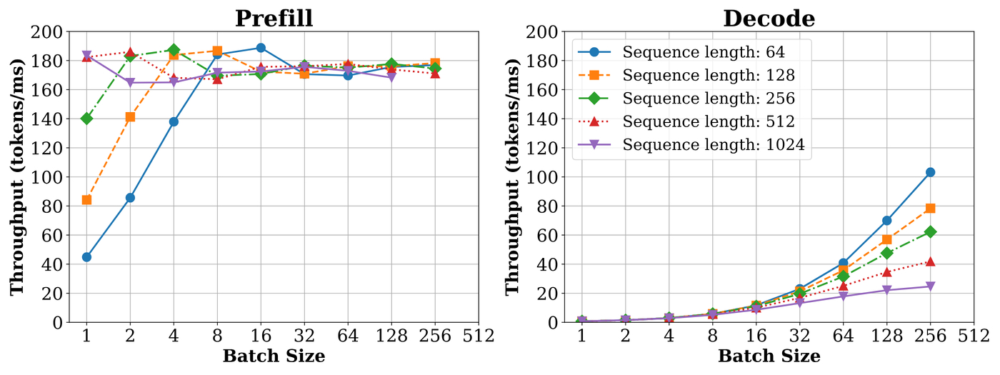
为解释这一行为，对各个操作的算术强度（arithmetic intensity）进行性能分析：算术强度度量每次内存读/写所对应的计算量，可区分计算受限（compute-bound）与内存受限操作。图4(b) 分别给出预填充（左）与解码阶段（右）各操作的算术强度。预填充阶段所有操作的算术强度都很高，即使在批大小为1时也是如此。解码阶段这些操作的算术强度下降超过两个数量级，仅在批大小达到256时才开始变为计算密集。但受每个请求的KV缓存占用限制，将批大小提升到如此高并不可行。例如在A6000 GPU上，LLaMA-13B模型在序列长度1K时可容纳的最大批大小为18个请求。因此在当前可用的批大小范围内，解码阶段始终是内存受限的。
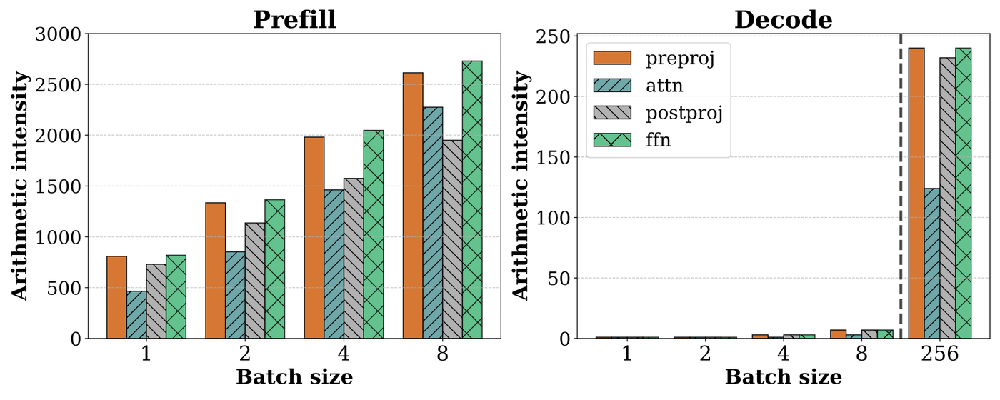
两个阶段吞吐扩展方式的差异源于：预填充阶段执行（批量）矩阵-矩阵乘法，而解码阶段执行向量-矩阵乘法。算术强度高于GPU的FLOPS:MemBandwidth比值的kernel属于计算受限，可高效执行；算术强度更低的kernel则因内存受限而无法充分利用GPU。
流水线并行（pipeline parallelism, PP）是大模型跨节点部署的常用策略，相比张量并行（tensor parallelism, TP）通信开销更低。PP按层切分模型，每块GPU负责一部分层；TP则把每一层切分到参与计算的各块GPU上。如前所述，相比TP，PP的计算通信比更优，且不需要昂贵的互连。
PP的挑战在于会引入流水线气泡（pipeline bubble），即GPU空闲时段，后序流水线阶段必须等待前序阶段中对应微批（micro-batch）完成。流水线气泡是训练任务中的已知问题，出现在前向与反向传播之间，原因是前序阶段需要等待反向传播到达。因此PP训练任务普遍采用微批，把气泡分摊到构成一个批次的多个微批上。
推理任务只做前向传播、没有反向传播，因此容易认为使用微批即可完全避免推理中的流水线气泡。实际上，现有Transformer推理引擎普遍使用微批，却没考虑PP的气泡问题。
迭代级调度看似能消除流水线调度中的气泡。然而，即使对请求进行迭代级调度，LLM推理中每个微批（或迭代）所需的计算量仍可能不同（执行时间随之变化），取决于该微批中预填充（prefill）与解码（decode） token的构成（见图5）。推理过程中存在三类气泡：(1) 类似PB1的气泡，源于相邻两个微批中预填充token数量不同；(2) 类似PB2的气泡，源于预填充阶段与解码阶段相继执行时两者计算时间不同；(3) 类似PB3的气泡，源于各请求累积的上下文长度（KV缓存长度）不同，导致微批之间解码计算时间存在差异。这些流水线气泡是浪费的GPU周期，直接对应流水线并行下服务吞吐的损失。若能使每个微批执行的计算量一致，即可缓解这些流水线气泡。
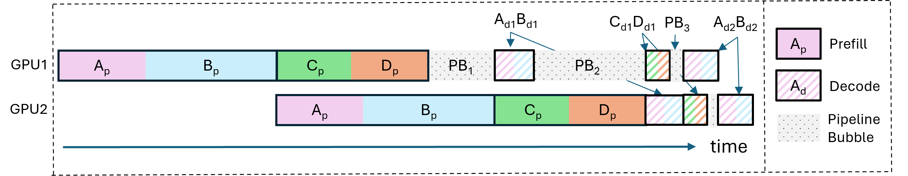
实验表明，预填充阶段与解码阶段的计算利用率模式差异极大：预填充即使只处理单个请求也能占满GPU算力，而解码需要较大的批大小（batch size）才具备计算效率。但大批次因KV缓存占用过高而不实用。这种不均衡的资源利用意味着，对每个请求而言，先有因高效预填充带来的高计算利用率阶段，随后是可能很长的低效解码长尾，导致整体GPU利用率偏低。此外，微批之间计算时间不一致会带来流水线气泡，使流水线并行的多GPU部署效率低下。
由此得到关键洞察：可以构造计算量均匀且计算密集的批次，方法是 (1) 用分块预填充（chunked-prefills）把大预填充请求切成更小、计算高效且均匀的分块；(2) 构造混合批次，由一个预填充分块与搭车执行的解码组成。由此形成的均匀且计算密集的批次可保证全程高GPU利用率，并通过消除流水线不同阶段微批之间的运行时间差异，最小化多GPU部署中的流水线气泡。
Sarathi的设计与实现采用两项技术：分块预填充（chunked-prefills）与解码最大化批处理（decode-maximal batching），以提升LLM推理性能。
FasterTransformer等传统推理引擎采用请求级推理调度，以请求为粒度处理批次：只有当前批次中所有请求都完成后，才选取下一批请求在模型副本上执行。这降低了调度框架的运行复杂度，但资源利用低效。批次中较短的请求必须填充到最长请求的长度，做无用功而无法提前退出。较新的系统如Orca、vLLM、HuggingFace TGI则提出迭代级调度（iteration-level scheduling），在预先确定的批大小b下，请求可动态加入和退出批次。
当前迭代级调度系统不关注构成批次的请求类型，也不关注批次之间执行时间的差异。一个批次可以只含处于预填充阶段的请求、只含处于解码阶段的请求，或含少量预填充与解码的混合请求，唯一约束是批大小始终为b。如前所述，这种批次构成会产生计算量不均匀的单元，造成资源利用的突发波动与流水线气泡。Sarathi用两项关键技术应对该挑战：分块预填充与解码最大化批处理(解码最大化批处理)。
分块预填充是一种预填充切分机制，基于两个关键洞察。第一，对给定模型与GPU，预填充token数超过某一点后，吞吐增益递减，如图4(a) 所示。例如Llama-13B在A6000 GPU上预填充token数达到512及以上时预填充吞吐达到峰值；分块大小为256时，峰值吞吐仅下降12.5%。随着模型隐藏维度增大，占满GPU算力所需的分块大小下降；GPT-3（隐藏维度12288）单层在A100 GPU上分块大小为256时吞吐即达峰值。这表明精心切分的预填充分块可组成计算饱和的批次。第二，许多实际场景中预填充规模相当大，生产负载中在1K–4K之间，为把预填充请求切分成更小的计算单元提供了空间。
实现chunked-prefills需谨慎设置注意力掩码。若某请求的输入提示（例如长度1K）被拆分为四个分块、每块256个token，则需确保直到提示结束的每个后续预填充（prefill）分块的注意力掩码都被正确设置。为便于说明，以分块大小为四为例，图6展示了Sarathi在连续三次迭代中如何为一个预填充提示的每个相继分块逐步设置注意力掩码：每个查询token q(i) 可以看到其之前所有token的键（和值），但不能看到其后的token。如此设置注意力掩码可保证分块预填充的计算在数学上等价于完整预填充。

分块预填充的开销。将预填充序列的输入切分为多个更小的分块会带来两个潜在开销来源。第一，分块预填充计算的算术强度随分块变小而下降。因此更小的分块会因GPU利用率低而影响预填充效率。这一问题易于解决：对给定模型-硬件组合与预期负载下不同分块大小的预填充吞吐做一次性性能分析（profiling），即可选出使模型端到端吞吐最大化的分块大小。
第二，分块预填充在注意力计算上带来轻微开销，原因是需重复访问请求中来自先前分块token的KV缓存。虽然直到提示结束的每次分块预填充操作对FFN（前馈网络）执行相同数量的计算，但首个分块之后的每个后续分块的注意力内核都必须从GPU内存重新读取先前token的全部KV对，如图6所示。例如，若一个预填充序列被拆分为N个分块，则第一个分块的KV缓存被加载N次，第二个分块的KV缓存被加载N−1次，依此类推。由于注意力计算在整体前向传播时间中占比很小（见表2），注意力时间增加带来的开销并不会显著影响端到端预填充效率。分块预填充开销的详细分析见后文。
要利用分块预填充的优势，需精心构造由预填充与解码（decode） token混合组成的混合批次，以最大化计算利用率并确保所有批次的计算时间一致。提出的解码最大化批处理利用分块预填充的思路，缓解迭代级调度中计算与内存利用率的不平衡。
在解码最大化批处理中，批次由一个预填充分块构成，其余槽位搭载解码token。这种混合批次提供的工作单元既能饱和计算，又保持一致性。下面讨论如何构造混合批次以达到最高效率。
将解码搭载到预填充上需处理两件事。第一，确定可搭载的解码的最大批大小，并确定预填充分块所包含的预填充token数。第二，要真正利用混合批次中饱和GPU的预填充计算来使解码高效，需将预填充分块与批次中解码的线性运算计算融合为单个操作。
解码批次。可与一个预填充分块搭载的最大解码批大小，由可用GPU内存（M(G)）、模型在每块GPU上的参数内存需求（M(S)）以及模型支持的最大序列长度L决定。每个请求的预填充（P）与解码（D）token总数不能超过该最大序列长度。假设每个token的一对K和V所需内存为m(kv)，则最大允许批大小B如下确定
最大批大小按下式求解：B = ⌊(M(G) − M(S)) / (L × m(kv))⌋，其中的取整意味着实际可容纳的请求数只能取下界。
在基线方案中，纯解码批次的最大批大小为B。在Sarathi中，解码数最多为B−1，因为要与一个预填充分块共同搭载（预填充的KV缓存也需保留在GPU内存中，直到其对应的解码迭代开始）。
解码最大化批处理融合所有线性运算，而预填充与解码的注意力计算分别执行。解码请求的注意力操作合并为一批处理，预填充分块中的注意力则单独处理。
解码效率。预填充与解码阶段走相同的计算路径，即两阶段的线性运算使用相同的权重张量。但与预填充相比，一次解码迭代只包含少量输入token（数量等于批大小）。因此基线解码的大部分计算时间花在从GPU全局内存读取模型权重上。
相比之下，解码最大化批处理通过将解码token与预填充token合并到单次矩阵乘法操作中，使用矩阵-矩阵乘法计算解码token。这实际上消除了为解码单独加载模型权重的需要：即，一旦为预填充（prefill）取回模型权重，这些权重也复用于解码（decode）。因此，解码最大化批处理将解码从内存受限（memory-bound）阶段转换为计算受限（compute-bound）阶段。这样，在Sarathi中，解码与预填充搭车时仅带来边际成本（注意注意力成本保持不变）。
以示例说明涉及的各种成本，表2将解码最大化批处理的一次迭代运行时与分别计算预填充（prefill）和解码（decode）迭代的基线方案进行比较。使用基线批处理时，仅解码迭代每个token耗时12.49毫秒。相比之下，使用解码最大化批处理时，每token解码时间仅为1.2毫秒。将解码与预填充搭车可将解码吞吐（decode throughput）提升最高一个数量级。
| 批处理方案 | 线性算子 (ms) | 注意力 (ms) | 总时间 (ms) | 单token预填充 (ms) | 单token解码 (ms) |
|---|---|---|---|---|---|
| 仅预填充 | 224.8 | 10 | 234.8 | 0.229 | - |
| 仅解码 | 44.28 | 5.68 | 49.96 | - | 12.49 |
| 解码最大化 | 223.2 | 15.2 | 238.4 | 0.229 | 1.2 |
Sarathi的一个重要设计考量是如何选择最合适的分块大小（chunk size）。直接选择是选取能使模型预填充吞吐（prefill throughput）饱和的最小分块大小。然而，发现该策略在许多情况下并非最高效。
为说明分块大小（chunk size）的重要性，引入一个简单记号“P:D比例”，其计算为给定批次中预填充token数与解码token数之比。例如，P:D比例为10表示预填充token数是解码的10倍。对于固定的P+D，较低的P:D比例值表示批次中的解码token数多于较高P:D比例值的批次。
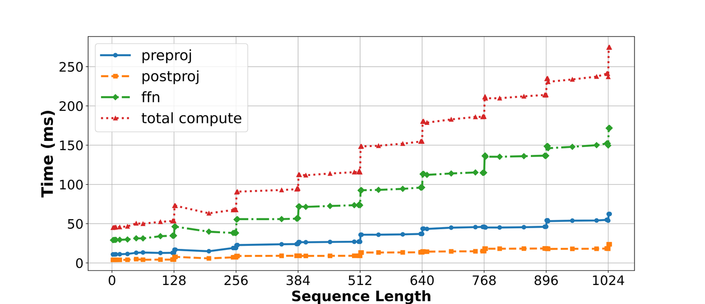
Sarathi中预填充分块（prefill chunk）的大小会影响使用解码最大化批处理可搭车的解码数。例如，考虑批大小为四个请求（其中一个请求处于预填充（prefill）阶段，三个处于解码（decode）阶段）且分块大小（chunk size）为128。大小为P的预填充将产生P/128个预填充分块，允许P/128 × 3 ≈ P/42个解码搭车。因此，该情况下，当P:D比例大于42时，可将所有解码与预填充重叠。类似地，若分块大小为256，则当P:D比例大于84时，所有解码均可搭车。因此，对于给定预填充序列，较低分块大小有助于搭车更多解码token。
解码时间随P:D比例下降而增加。因此，超过某一点后，优化解码比以峰值效率执行预填充（prefill）更重要。例如，若预填充（prefill）和解码阶段分别占总时间的10% 和90%，则即使预填充有5倍开销，只要解码能优化2倍或更多，也可接受。
确定合适的分块大小（chunk size）涉及权衡：较小分块搭车更多解码，但代价是较低预填充（prefill）效率；较大分块预填充高效，但搭车更少解码。因此，理想分块大小取决于预期P:D比例以及给定应用中预填充与解码时间的占比。
分块量化（tile quantization）效应。此外，观察到与分块大小（chunk size）相关的一个细节。GPU通过将给定矩阵划分为tile并分配给不同线程块进行并行计算来执行矩阵乘法（matmul）。这里，每个线程块指一组线程，并计算相同数量的算术操作。因此，当矩阵维度可被tile大小整除时，矩阵乘法达到最大GPU利用率。否则，由于分块量化（tile quantization），一些线程块会执行多余（浪费）的计算。
当序列长度刚好高于128的倍数时，计算预填充（prefill）序列的时间会突然增加（实验中的tile大小）。例如，如图7所示，将序列长度从128个token加倍到256个token使迭代时间增加27%：从55ms到69.8ms。然而，仅增加一个token会进一步将迭代时间增至92.33ms：仅因多一个token就大幅增加32%。因此，当序列长度是tile大小的倍数时，GPU执行矩阵乘法（matmul）最高效。
因此，选择理想分块大小（chunk size）是一个两方面的决策。首先，根据给定工作负载所需的预填充（prefill）效率选择分块大小。其次，确保分块大小与搭车的解码token数之和是tile大小的倍数。这确保融合操作的相关矩阵维度保持为tile大小的倍数。例如，若所选分块大小为256，tile大小为128，且最大允许批大小为B，则预填充分块大小应为256 − (B − 1)。
Sarathi实现在nanoGPT代码库 上，同时支持分块预填充（chunked-prefills）与解码最大化批处理。为对比Orcas的迭代级调度（iteration-level scheduling），采用混合批处理（mixed batching）机制，不限制每批次允许的预填充数量。这样可确保基线与Sarathi之间的结果差异不源于实现差异。计算注意力（attention）操作时使用xformers实现，在当前配置下其性能优于PyTorch 2.0内置的注意力实现，即flash attention、memory-efficient attention与math attention内核。为避免在每次解码（decode）迭代中为KV缓存（KV cache）分配内存，按每次实验的最大序列长度（sequence length）预分配KV缓存，并在需要时原地更新对应的KV对。
代码库中支持不同的模型配置，以在不同模型与硬件组合上评估Sarathi。例如，评估LLaMA-13B时，层数与注意力头数设为40，hidden size设为5120。LLaMA-33B使用60层、52个注意力头，hidden size为6656。GPT-3使用96层、96个注意力头，hidden size为12288。
如Table 3所示，单GPU实验采用物理部署，大规模实验采用性能分析（profiling）驱动的模拟，在多种模型与GPU上评估Sarathi。评估旨在回答以下问题：
1 Sarathi对解码（decode）吞吐以及LLM（大语言模型）端到端吞吐有何影响？此外，改变序列长度（sequence length）、批大小（batch size）与P:D比例有何影响？
2 Sarathi与Orca等现有迭代级调度（iteration-level scheduling）机制相比如何？
3 这些技术对GPU气泡（bubble）与流水线并行（pipeline parallelism）模型的吞吐有何影响？
4 分块预填充的开销是多少？
| 模型 | GPU | GPU数量 | 单卡显存(GB) | 评测方式 |
|---|---|---|---|---|
| LLaMA-13B | A6000 | 1 | 48 | 真实部署 |
| LLaMA-33B | A100 | 1 | 80 | 真实部署 |
| GPT-3 | A100 | 64 | 80 | 模拟 |
在单GPU上测量Sarathi的解码加速比与端到端吞吐，并与基线对比：基线通过仅预填充（prefill-only）与仅解码（decode-only）批次分别执行预填充（prefill）与解码阶段。进一步考察不同P:D比例（预填充与解码token之比）、序列长度（每请求总token数，即P+D）与批大小对整体吞吐的影响。
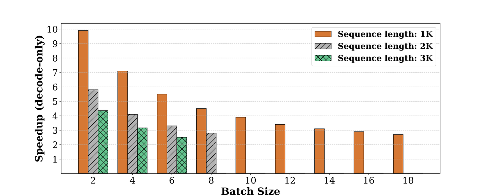
首先展示这些技术对解码阶段吞吐的影响，解码吞吐基于解码一个token的平均耗时计算。基线系统中，将一次解码迭代的处理时间除以批大小，得到每token平均解码时间。Sarathi中解码被搭载执行，对于含p+d个token的批次（p表示预填充分块大小，d表示解码批大小），计算解码最大化批次与预填充大小为p的仅预填充批次之间的运行时差值，将该时间差归为d个请求批次的边际解码时间。再用该边际解码时间计算每token解码时间。
Figure 8给出了A6000 GPU上LlaMa-13B、分块大小为256的结果，批大小在可容纳的最大值范围内变化，对应三种不同的预填充序列长度。分块预填充将解码效率相比基线提升最多一个数量级。Sarathi的解码吞吐更高，源于解码最大化批处理用矩阵乘法计算解码token，使模型权重在从GPU全局内存取出后，可同时被预填充与解码复用。
decode（解码）加速比随批大小（batch size）或序列长度（sequence length）增大而下降，原因如下：(1) 基线系统中的decode随批大小增大而变得更高效；(2) 注意力（attention）开销随序列长度呈平方增长：所有改进都来自线性算子优化，注意力开销升高会压缩可优化空间。但在所有情况下decode吞吐提升依然显著（2.8倍 - 10倍）。
表4给出Sarathi相对基线取得的峰值吞吐增益。为验证所提技术的通用性，在两种模型-GPU组合上评测Sarathi：(1) A6000 GPU上的LLaMA-13B；(2) A100 GPU上的LLaMA-33B。并进一步考察序列长度为1K、2K、3K时的峰值吞吐增益。表4列出了取得最大加速比时的批大小与P:D比。
最佳情况下，所提技术将端到端吞吐提升至1.33倍（LLaMA-13B）和1.25倍（LLaMA-33B）。A6000 GPU上的加速比高于A100 GPU，原因是A100 GPU的FLOPs/MemBandwidth高于A6000 GPU（忽略GPU缓存时约156对约53）。因此，在A100 GPU（或嵌入维度更大的模型）上需要更大的分块（chunk）大小，以避免损失预填充（prefill）效率。即便如此，Sarathi在A100 GPU上仍稳定优于基线1.14倍 - 1.25倍。结果表明，将decode token与预填充分块搭车（piggyback）在广泛的模型与硬件上都有效。尽管decode效率最高提升一个数量级，端到端加速比以及由此带来的推理成本节省约为25%，原因是该技术只优化decode，不优化预填充。
| 模型 (GPU) | 序列长度 | 批大小 | P:D比例 | 解码加速 | 吞吐提升 |
|---|---|---|---|---|---|
| LLaMA-13B (A6000) | 1K | 6 | 50:1 | 5.45× | 1.33× |
| LLaMA-13B (A6000) | 2K | 6 | 50:1 | 3.26× | 1.26× |
| LLaMA-13B (A6000) | 3K | 6 | 50:1 | 2.51× | 1.22× |
| LLaMA-33B (A100) | 1K | 10 | 28:1 | 3.83× | 1.25× |
| LLaMA-33B (A100) | 2K | 5 | 63:1 | 4.25× | 1.22× |
| LLaMA-33B (A100) | 3K | 3 | 127:1 | 3.51× | 1.14× |
在不同序列长度与分块大小下，考察变化的P:D比对端到端推理吞吐的影响，以覆盖广泛的应用场景。P:D比是这些实验的重要参数：P:D比越低，说明该请求的decode token占比高于P:D比更高的请求。P:D比低意味着decode在推理成本中占比更大、Sarathi可优化的空间更大，但同时也意味着可用于搭车decode的预填充分块更少。这一权衡使Sarathi的增益在特定P:D比处达到峰值，随后向两侧递减。下文详述。
图9给出实验结果。在不同预填充分块大小与批大小场景下，所提技术的峰值效率出现在不同的P:D比处。设C为分块大小、B为批大小，可以证明峰值出现在decode与预填充分块完美搭车时，即预填充分块数（= P/C）等于所需的decode迭代数（= D/(B-1)），也就是P:D=C/(B-1)。例如，批大小为18、分块大小为256时，序列长度1K下Sarathi在P:D=14（≈ C/(B-1)=256/17）处取得1.27倍的峰值吞吐提升，如图9(a) 所示。批大小为18、序列长度1K时分块大小512也带来最高1.23倍的显著增益，对应P:D=28（≈ C/(B-1)=512/17）；分块大小128的增益则低得多。更小的分块提供更多decode重叠机会，但把预填充切成过小的分块会降低算术强度（arithmetic intensity），即矩阵乘法效率更低、开销更高（需多次读取KV缓存），最终降低端到端性能。因此分块大小256/512的吞吐远高于128。分块越大，峰值增益出现的P:D比越高。
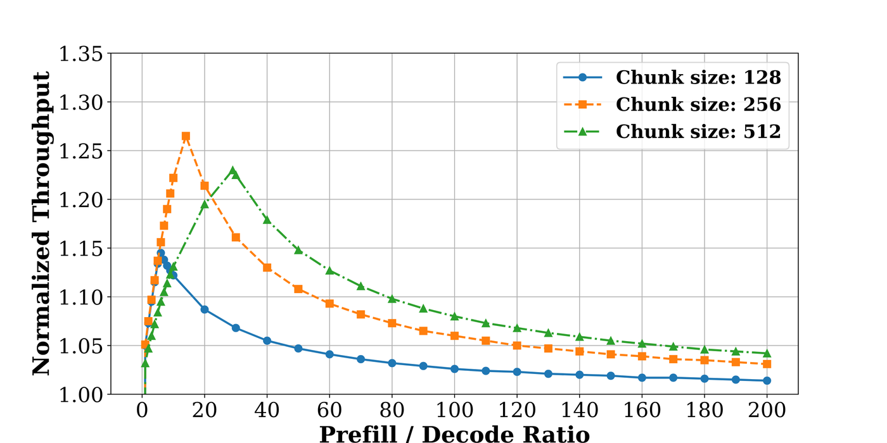
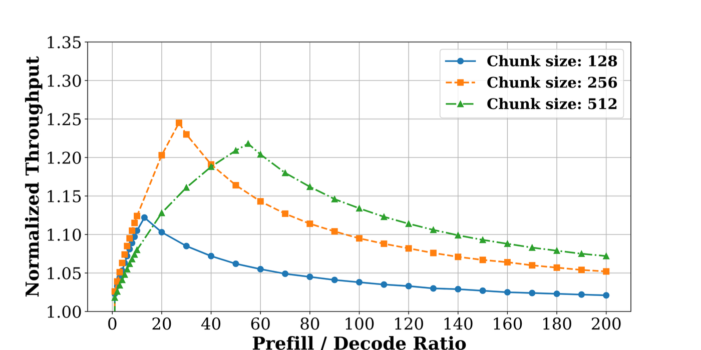
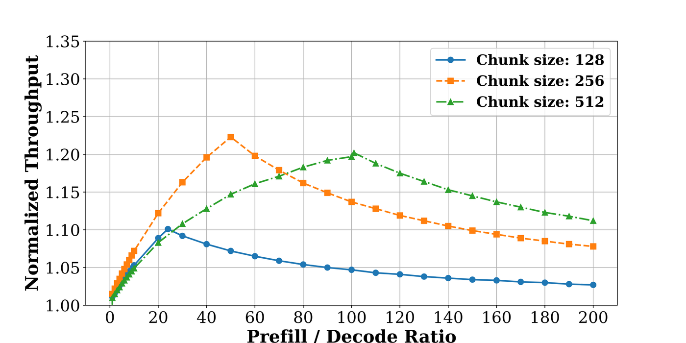
当推理既不由预填充、也不由decode完全主导（即P:D比均衡）时性能达到峰值，此时预填充与decode能长时间高效重叠。否则，Sarathi会耗尽预填充token（P:D比低）或decode token（P:D比高）。此时Sarathi可切换到其他分块大小，或像标准基线一样只处理纯预填充批次或纯decode批次。尽管存在这种波动，在很大范围的P:D比上改进仍保持在10% 左右。
针对每种序列长度，改变批大小与分块大小以进一步考察Sarathi的性能。所有实验均聚焦P:D比均衡的执行场景，即P:D=C/(B-1)、所有decode token都与预填充完美搭车，从而测得系统的峰值性能。
图10给出这些实验的结果。对每种序列长度与分块大小配置，展示改变批大小的影响；每次运行还给出各算子的运行时间，即preproj、attention、postproj和ffn。
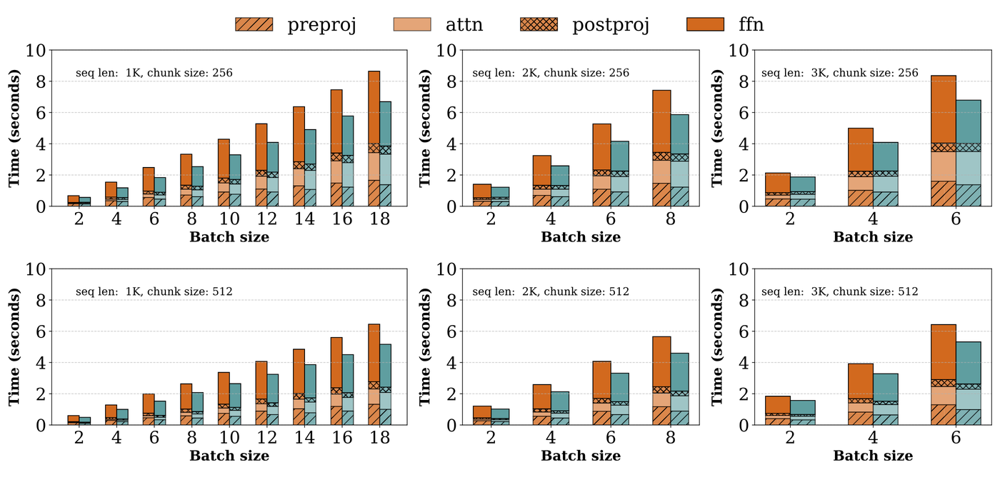
解码最大化批处理把预填充token与decode token合入线性算子，以提高计算利用率。因此线性算子的运行时间相比基线最多降低1.6倍（见第一行ffn运行时间）。改进幅度同样取决于P:D比，即取决于decode占用的时间比例。例如分块大小256可搭车的decode数量是512的两倍。因此在最优配置（P:D=C/(B-1)）下，分块大小256时decode占总运行时间的比例高于分块大小512的最优配置，所以分块大小256的吞吐增益更高。
不同线性算子在该技术下的加速比不同。ffn模块中的线性计算运行时间降低最多，为1.3倍 - 1.6倍；preproj与postproj的运行时间降低1.05倍 - 1.38倍。批大小较小时，大部分吞吐提升来自解码最大化批处理中ffn计算效率的提高。
此前的评估都基于一个基线系统，一次只处理纯预填充（prefill）或纯解码（decode）批次：FasterTransformer等流行框架部署Transformer模型正是采用这种方式。相比之下，Orca的迭代级调度 能以单个迭代为粒度，向运行中的批次加入请求，或从中移出请求。
迭代级调度同样影响GPU利用率：请求在不同时刻到达或离开时，部分预填充（新到请求的）会自动与解码（已在运行请求的）重叠。因此，预期迭代级调度会优于基线：至少在某些情况下如此。但预填充与解码的重叠在迭代级调度中更多是一种副作用，其行为随请求大小及到达或离开时刻的变化而显著不同。更重要的是，当前的迭代级调度方法在单个预填充阶段提交请求的整个输入序列，极大限制了把解码token搭载到预填充上的机会。
为理解其对整体吞吐的影响，在两个场景下评估当前最优的迭代级调度器Orca：最优情况与最差情况。最优情况下，Orca调度让一个新请求的完整预填充与正在进行的解码重叠。最差情况下，所有请求同时开始并同时结束，此时Orca调度的行为与前述基线相近，预填充与解码token的计算之间不存在重叠。在Orca的平均情况下，可能有不止一个完整预填充（对应多个请求）与部分解码重叠：这会进一步限制Orca把解码token搭载到预填充上的能力。
图11给出这些实验的结果。首先（图11a）是最优选择P:D=C/(B-1) 下的结果，其中C=256，B为该序列长度下可容纳的最大批大小。如预期，最差情况下的Orca调度性能与基线相近。序列长度为1K时，最优情况下的Orca调度达到1.11倍的吞吐提升，源于最优调度中预填充与解码请求的偶然重叠。但随着序列长度增加，最优情况下Orca调度的性能下降到接近基线。这是P:D=C/(B-1) 这一选择带来的结果：序列长度增加使批大小B减小，最优P:D随之升高。由于Orca把整个输入序列作为单个预填充请求提交，更高的P:D意味着预填充token很快耗尽，此后处理剩余解码token的方式与基线相同，即使最优情况也效率不高。Sarathi在三种序列长度下始终更优，整体吞吐提升分别为1.27倍、1.25倍和1.23倍。
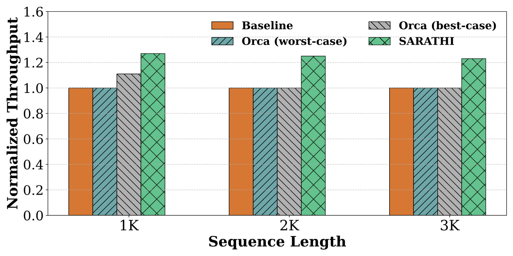

迭代级调度中另一个需要考虑的方面是可变序列长度对请求延迟的影响。预填充时间随输入序列长度增加，向运行中的批次加入较长的预填充序列会延迟正在进行的解码，进而提高Orca调度中这些进行中请求的延迟。Sarathi通过使用更小的分块预填充避免了这一点。
图11b评估不同分块大小下、不同P:D比的吞吐增益。该实验仅取序列长度1K，因为最优情况Orca基线在此区间达到最高性能。最优情况Orca调度可视为Sarathi在分块大小C等于最大序列长度时的特例。最优P:D随分块大小增大而右移。分块大小为256的Sarathi在较低P:D区间表现最好，相对基线达到1.27倍的吞吐峰值增益。分块大小为512的Sarathi始终优于最优情况Orca，在较高P:D区间整体表现最好，达到1.23倍的吞吐峰值增益。相比之下，最优情况Orca的增益曲线平坦得多，在远高于此的P:D下才达到1.11倍的吞吐峰值增益。
评估Sarathi如何在多GPU流水线并行（pipeline-parallel）配置中减少流水线气泡（pipeline bubble），并进而影响推理作业的整体运行时间。该实验在精心构建的模拟环境中进行评测。
先对GPT-3模型 在不同批大小与序列长度下、预填充与解码阶段中表1的每个操作做运行时性能分析（profiling），再对网络通信开销做性能分析，以忠实模拟张量并行（tensor parallelism）与流水线并行的执行。最后构建回归模型，外推并预测在线模拟推理服务系统中可能遇到的缺失数据点。已确认模拟器估计的运行时间与8-GPU、80GB A100 DGX机器上的实测值偏差在5% 以内。
在通过InfiniBand连接的八台服务器、共64块A100 GPU上部署并测试，评估三种场景：(1) 节点内8路张量并行（TP）、节点间8路流水线并行（PP），采用最优情况Orca风格调度；(2) 相同的TP-PP配置，调度采用Sarathi的分块预填充（chunked-prefills）与解码最大化批处理(解码最大化批处理)；(3) 8个并行副本，每个8路TP，同时提供服务。所有场景都使用GPU可容纳的最大批大小：TP+PP为27，仅TP为11。该模拟中P:D比固定为10，请求的最小与最大序列长度分别设为1K和4K。每个请求的序列长度可不同，按不超过最大序列长度的Zipf分布（θ=0.4）采样。预填充与解码token的数量按满足目标P:D比计算。该实验分块大小设为256。
图12(a) 绘制每个请求流水线气泡时间的cdf，定义为给定请求在所有迭代中所有微批（micro-batch）的气泡时间之和。通过构造计算量相等的单元工作，Sarathi将每个请求的气泡时间中位数降低6.29倍。

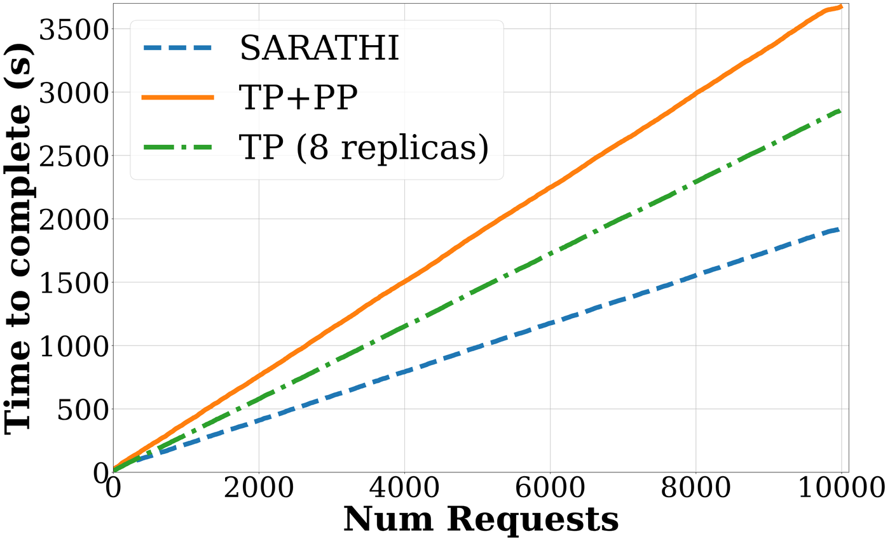
接下来对比12(b) 中不同场景下的整体请求完成时间。该图绘制完成给定数量请求所需的时间（模拟共考虑10K个请求）。相比仅TP的配置，TP-PP执行用于存储参数的内存更少，为KV缓存留出更多空间。因此TP-PP部署支持的批大小比仅TP部署高2.45倍，但仅TP执行的延迟比采用Orca调度的基线TP-PP快1.28倍，原因在于后者的流水线气泡很大。然而，采用分块预填充（chunked-prefills）与解码最大化批处理(解码最大化批处理)后，Sarathi启用的PP执行相比基线TP-PP加速1.91倍，相比仅TP执行加速1.48倍。因此，通过显著减少流水线气泡，Sarathi使流水线并行执行成为LLM推理的一个有吸引力的选项。
本小节评估将完整预填充计算拆分为多个更小的预填充分块如何影响Sarathi中预填充阶段的效率。为量化这一点，测量一次性使用完整序列计算不同序列长度预填充阶段的时间：这代表基线预填充性能。随后对每个长序列使用分块预填充计算预填充，并将其端到端运行时与基线对比。两者之差即分块预填充的开销。
预填充分块有两个潜在开销来源：(1) 相比基线使用更小的分块大小，可能降低GPU利用率；(2) 需要多次加载每个分块的KV缓存，次数取决于请求中的分块数量。因此，为充分理解预填充分块的开销，考察以下三点：(1) 分块对仅预填充批次的注意力计算有何影响，(2) 分块对仅预填充批次整体运行时有何影响，(3) 分块预填充与解码最大化批处理配合使用时的端到端吞吐如何。通过将分块大小从64变化到512进行研究，如图13所示。
首先，更小的分块大小会带来显著开销，无论是注意力计算还是整体预填充运行时。例如，分块大小64使注意力开销达3倍（见13(a)），整体预填充时间约5倍（见13(b)）。可以预期，分块越大，分块预填充的开销越低：这是更高的GPU利用率与更少的KV缓存重载共同作用的结果。总体而言，分块大小256和512提供合理的预填充效率，将端到端预填充计算损失分别限制在20% 和10% 以内。
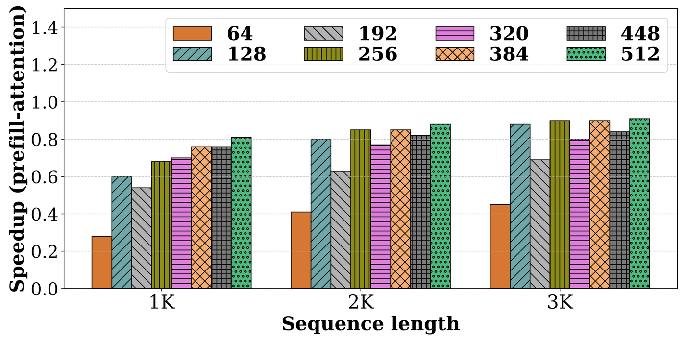
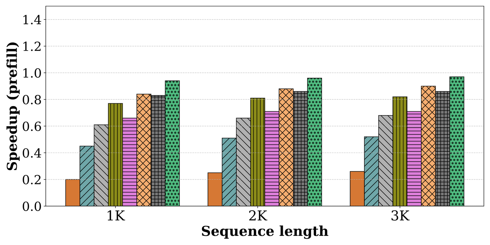
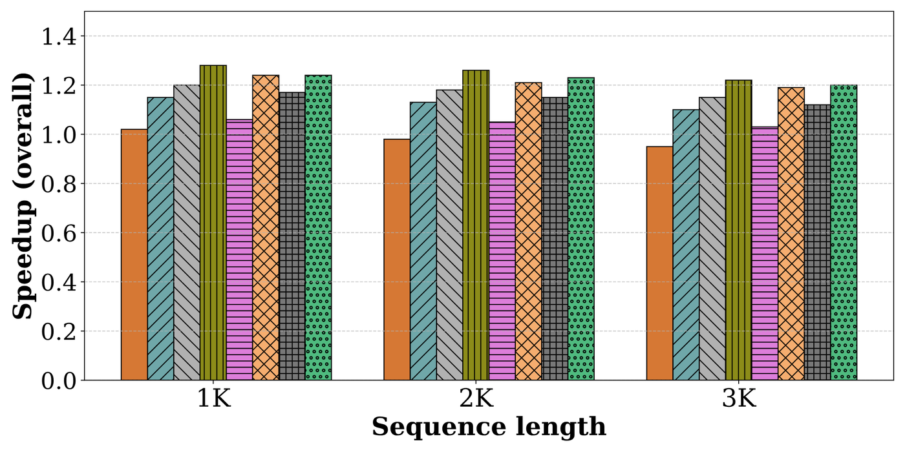
其次，Sarathi可以通过提升解码吞吐来补偿部分预填充效率损失。例如，从13(c) 可见，分块大小64尽管预填充慢5倍，性能几乎与基线持平；分块大小128尽管预填充比基线慢2倍以上，吞吐提升最高达1.16倍，主要因为搭车执行了更多解码。分块量化（tile-quantization）效应在图13中也很明显：当分块大小为128的倍数时，Sarathi的吞吐提升更高；例如分块大小256的加速比优于320。
全面展示了Sarathi如何在多种模型和硬件配置上提升LLM推理性能，但仍有若干挑战需要进一步研究。
首先，Sarathi仅关注高效调度机制以提升LLM推理吞吐。但真实部署需要同时在多个维度上优化推理服务基础设施，例如延迟、排队延迟、公平性等。用Sarathi满足这些目标需要重新审视调度策略。其次，虽然给出了给定P:D比下合适的分块大小，但如何选取最优分块大小留待未来工作，因为其取决于硬件、模型特性、序列长度以及预填充-解码token构成等多个因素，尤其是在P:D比无法预先获知的场景下。第三，假设批次中每个请求具有相同数量的预填充和解码token（仿真实验除外），而真实世界中不同LLM推理请求的序列长度可能差异很大。最后，关注最长3K的序列长度与1–200范围内的P:D比。这些对许多真实部署具有代表性，但对超长序列（例如数万至数十万）的支持兴趣也在增长。此类超长序列可能带来新挑战，因为注意力开销随token数量二次增长。这些挑战正在积极研究中。
本节从两个维度简要总结相关工作：系统优化与模型创新。
内存管理：在自回归解码中，给定请求需要生成的token数量无法事先得知。因此传统系统基于对最大token数的保守估计预分配KV缓存内存。近期vLLM指出该做法效率低下，并受虚拟内存抽象启发提出一个框架，支持KV缓存的增量内存分配。这有助于提升批大小，尤其在不同请求的token数量差异很大时。FlexGen关注资源受限场景（例如在单块GPU上运行大模型）下离线LLM推理吞吐的提升，为此巧妙结合了内存卸载、量化与调度。
优化（自）注意力：已有算法将自注意力的内存需求相对序列长度从O(n²) 降至O(1)。FlashAttention提出基于分块的算法，通过最小化GPU不同层级内存之间的读写字节数来加速注意力计算。FlashAttention的后续工作 在并行度和工作划分方面进一步改进。实验中，xformers的高效内存注意力实现 表现最为高效。
内核级优化：FasterTransformer提出了针对Transformer编码器与解码器块的优化层，基于kernel fusion等底层GPU优化。此类底层优化同样可惠及Sarathi。
调度优化：Orca提出迭代级调度（iteration-level scheduling）框架，避免早期为将不同序列长度的请求合批而使用的token padding造成的算力浪费。此外，Orca在请求生成序列结束token后立即返回响应，从而降低延迟。FastServe提出抢占式调度框架以最小化作业完成时间。其他调度框架包括Triton与Clipper，将服务层与模型执行引擎分离。当前工作聚焦于优化执行层，可与上述系统提出的不同调度策略配合使用。
多项先前工作提出的优化可与Sarathi的优化互补，例如更优化的注意力实现将使Sarathi能扩展至更长序列长度，动态内存分配有助于支持更大批大小，等等。
围绕模型创新的大量工作试图解决基于Transformer的语言模型的缺陷，或在模型架构上实现超越Transformer的跨越。例如，multi-query attention在所有注意力头上共享相同的keys与values，以减小KV缓存大小，从而支持更大批大小。近期多项工作还表明，量化可显著压缩模型规模。Mixture-of-expert模型主要旨在减少单次迭代中激活的模型参数量。更近期，retentive networks被提出作为Transformer的后继。本工作从GPU视角出发，聚焦解决最流行的Transformer模型的性能问题。模型创新与Sarathi正交。
参考：https://arxiv.org/html/2308.16369v1